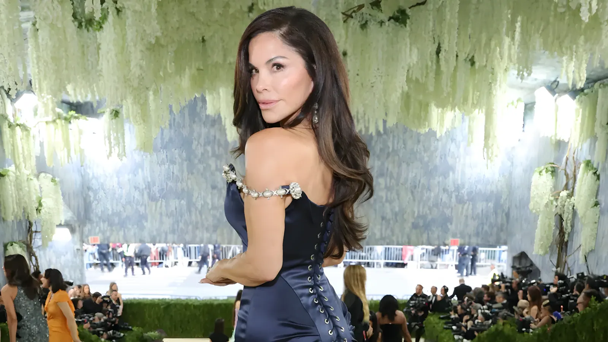
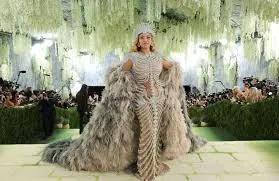
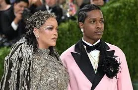
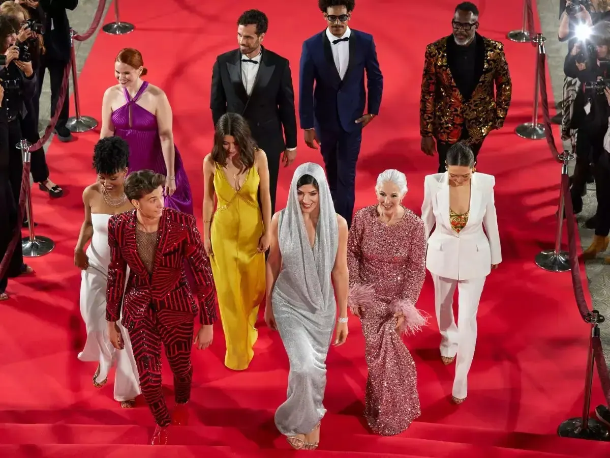

Le 4 mai 2026, le Metropolitan Museum of Art a célébré l'édition la plus lucrative de son histoire : 42 millions de dollars levés pour le Costume Institute, sous le thème « Costume Art ». Derrière le spectacle habituel des tenues extravagantes et des célébrités, une mutation profonde s'est opérée — la Silicon Valley a pris les rênes d'un événement longtemps dominé par la mode et le cinéma, soulevant avec elle un flot de contestations inédites.
Le Met Gala — officiellement le Costume Institute Benefit — a été fondé en 1948 par Eleanor Lambert, journaliste de mode new-yorkaise, sous la forme d'un simple dîner de minuit à 50 dollars l'entrée. Son objectif originel était de financer le Costume Institute du Metropolitan Museum of Art, seul département du musée qui doit assurer son propre financement. C'est sous l'impulsion de Diana Vreeland, ancienne rédactrice en chef de Vogue, que le gala se transforme à partir de 1972 en soirée glamour, avant qu'Anna Wintour, codirectrice de Condé Nast, n'en prenne le pilotage en 1995 pour en faire l'événement le plus sélectif de la mode mondiale.
Aujourd'hui, le Costume Institute conserve plus de 33 000 pièces — vêtements, accessoires et ephemera — couvrant du XVe siècle à nos jours. Aucune de ces pièces n'est exposée en permanence, les textiles anciens étant particulièrement sensibles à la lumière. L'exposition annuelle du printemps, inaugurée chaque année par le gala, constitue l'occasion unique pour le grand public d'y accéder. L'édition 2026, intitulée « Costume Art », était ouverte jusqu'au 10 janvier 2027 dans les nouvelles galeries Condé M. Nast du musée, sur une surface d'environ 12 000 pieds carrés.


À gauche : Beyoncé, codirectrice du gala, de retour après dix ans d'absence. À droite : Rihanna et A$AP Rocky, clôturant le tapis rouge en Maison Margiela.
Annoncé le 17 novembre 2025, le thème de l'édition 2026 — « Costume Art » — marque une rupture formelle dans l'histoire des expositions du Costume Institute. Andrew Bolton, conservateur en chef depuis 2002, a délibérément choisi de se passer de sous-titre, une première pour lui, afin d'affirmer la centralité du corps habillé dans l'histoire de l'art. L'exposition juxtapose des vêtements historiques et contemporains avec des œuvres issues des collections permanentes du Met, démontrant comment le vêtement façonne le corps, et comment le corps influence à son tour ses représentations artistiques.
En pratique, l'exposition présente 25 mannequins imprimés en 3D fondés sur des morphologies réelles et diversifiées — un abandon explicite du standard de la taille 2 qui avait longtemps dominé les présentations muséales de la mode. Cette démarche inclusive constitue l'une des ruptures majeures de l'édition. Le dress code imposé aux invités — « Fashion is Art » — invitait chacun à incarner ce dialogue entre le corps et le vêtement, offrant une liberté d'interprétation particulièrement large et générant un foisonnement de looks commentés dans le monde entier.
L'édition 2026 restera dans les annales comme la première où un acteur de la tech — et non de la mode ou du cinéma — a occupé la position de mécène principal. Jeff Bezos et son épouse Lauren Sánchez Bezos ont contribué à hauteur de 10 millions de dollars, agissant en tant que coprésident honoraires. Amazon, Meta, OpenAI et Snapchat ont chacun acquis une table à 350 000 dollars. Les billets individuels ont atteint 100 000 dollars, contre environ 75 000 dollars l'année précédente. Au total, 42 millions de dollars ont été levés, surpassant le précédent record de 31 millions établi en 2025.
Ce basculement vers la tech n'est pas totalement inédit — Amazon avait déjà parrainé le gala dès 2012, suivi d'Apple, d'Instagram et de TikTok — mais il prend en 2026 une ampleur inégalée. Pour la première fois, un milliardaire de la tech occupait la place de mécène principal, et plusieurs grandes entreprises numériques achetaient des tables simultanément. Anna Wintour, codirectrice de Condé Nast et codirectrice du gala depuis 1995, a présidé la soirée aux côtés de Beyoncé, Nicole Kidman et Venus Williams, tandis que Zoë Kravitz et Anthony Vaccarello co-présidaient le comité des hôtes.

À gauche : le tapis rouge de la 5e Avenue, scène de looks inspirés par le thème « Fashion is Art ». À droite : militants du collectif « Boycott the Bezos Met Ball » devant le musée.
Un collectif activiste colle des affiches « Boycott the Bezos Met Ball » dans tout New York et projette des slogans sur l'immeuble résidentiel de Jeff Bezos, évalué à 120 millions de dollars. Une vidéo mettant en scène une travailleuse d'entrepôt Amazon âgée de 72 ans, critiquant le mécénat de Bezos pendant que ses employés vivent de salaire en salaire, est partagée par l'acteur Mark Ruffalo.
Jeff Bezos ne se présente pas sur le tapis rouge, au milieu des polémiques liées à son rôle de mécène principal. Lauren Sánchez Bezos y défile seule, dans une robe haute couture Schiaparelli sur mesure inspirée du tableau « Madame X » de John Singer Sargent. Un contre-événement, le « Ball Without Billionaires », réunit des travailleurs d'Amazon, de Whole Foods et du Washington Post.
Olivia Rodrigo, présente aux trois éditions précédentes, est absente et a publiquement « liké » la vidéo protestataire. Aucune déclaration officielle n'est faite sur sa non-participation.
Beyoncé a signé son grand retour au Met Gala après dix ans d'absence (sa dernière présence remontait à 2016), accompagnée de Jay-Z et de leur fille Blue Ivy, qui faisait ses débuts à 14 ans. Rihanna et A$AP Rocky ont clos le tapis rouge, selon la tradition, dans une création métallique drapée de Maison Margiela signée Glenn Martens. Blake Lively a fait sa réapparition pour la première fois depuis 2022, quelques semaines après le règlement de son conflit judiciaire avec le réalisateur Justin Baldoni. À l'intérieur, Sabrina Carpenter a chanté « Landslide » avec Stevie Nicks avant d'enchaîner ses propres titres, changeant plusieurs fois de tenue au cours de la soirée.
En 2026, le Met Gala a cessé d'être uniquement la fête de la mode pour devenir un miroir des reconfigurations de pouvoir qui traversent l'Amérique. L'irruption de la Silicon Valley dans l'enceinte du Met — avec ses milliards, ses tables achetées et son mécène contesté — illustre un glissement symbolique : ce sont désormais les géants du numérique, et non les maisons de couture ou les studios hollywoodiens, qui décident des conditions d'accès au prestige culturel. Que cela soit célébré ou dénoncé, ce basculement dit quelque chose d'essentiel sur la façon dont la richesse technologique cherche à s'ancrer dans la légitimité culturelle — et sur les résistances qu'elle suscite.
On 4 May 2026, the Metropolitan Museum of Art celebrated the most lucrative edition of its annual Costume Institute Benefit: $42 million raised under the theme "Costume Art." Behind the customary spectacle of extravagant outfits and A-list celebrities, a deeper transformation was underway — Silicon Valley seized control of an event long defined by fashion and film, bringing with it an unprecedented wave of protest.
The Met Gala — officially the Costume Institute Benefit — was founded in 1948 by fashion journalist Eleanor Lambert as a simple midnight supper at $50 a ticket. Its original purpose was to fund the Metropolitan Museum of Art's Costume Institute, the only department in the museum required to be entirely self-sustaining. It was under Diana Vreeland, former editor-in-chief of Vogue, that the gala evolved from 1972 into a glamorous affair, before Anna Wintour, Condé Nast's chief content officer, took over as chair in 1995 and turned it into the most exclusive event in the fashion world.
Today, the Costume Institute holds more than 33,000 objects — garments, accessories, and ephemera — spanning from the fifteenth century to the present. None of these pieces are on permanent public display, as aging textiles are highly sensitive to light. The annual spring exhibition, inaugurated each year by the gala, is the rare occasion for the public to access them. The 2026 edition, titled "Costume Art," ran until January 10, 2027, in the museum's new Condé M. Nast Galleries, spanning approximately 12,000 square feet.
Left: Beyoncé, Gala co-chair, returning after a ten-year absence. Right: Rihanna and A$AP Rocky, closing the red carpet in Maison Margiela.
Announced on November 17, 2025, the 2026 theme — "Costume Art" — marks a formal departure in the history of Costume Institute exhibitions. Chief curator Andrew Bolton, who has led the institute since 2002, deliberately chose to do away with a subtitle for the first time, in order to assert the centrality of the dressed body within art history. The exhibition juxtaposes historical and contemporary garments with works from the Met's permanent collection, demonstrating how clothing shapes the body — and how the body in turn shapes its artistic representations.
In practice, the show features 25 three-dimensionally printed mannequins based on real, diverse body types — an explicit departure from the size-2 standard that had long dominated museum presentations of fashion. This inclusive approach represents one of the edition's defining departures. The dress code imposed on guests — "Fashion is Art" — invited each attendee to embody this dialogue between body and garment, offering unusually wide room for interpretation and generating a global conversation around the resulting looks.
The 2026 edition will go down as the first in which a tech figure — rather than a fashion house or Hollywood studio — occupied the role of lead patron. Jeff Bezos and his wife Lauren Sánchez Bezos contributed a reported $10 million, serving as honorary co-chairs. Amazon, Meta, OpenAI, and Snapchat each purchased tables at $350,000. Individual tickets reached $100,000, up from roughly $75,000 the year before. In total, $42 million was raised, surpassing the previous record of $31 million set in 2025.
Tech's involvement in the Met Gala is not entirely new — Amazon first sponsored the event in 2012, followed by Apple, Instagram, and TikTok — but in 2026 it reached an unprecedented scale. For the first time, a tech billionaire occupied the position of lead sponsor, and several major tech companies purchased tables simultaneously. Anna Wintour co-chaired the evening alongside Beyoncé, Nicole Kidman, and Venus Williams, while Zoë Kravitz and Anthony Vaccarello led the host committee.
Left: the Fifth Avenue red carpet, showcasing looks inspired by the "Fashion is Art" dress code. Right: activists from the "Boycott the Bezos Met Ball" collective outside the museum.
An activist collective posted "Boycott the Bezos Met Ball" signs across New York City and projected slogans onto the exterior of Jeff Bezos's $120 million penthouse. A video featuring a 72-year-old Amazon warehouse worker chastising Bezos for funding a lavish event while most of his workers live paycheck to paycheck was shared by actor Mark Ruffalo.
Jeff Bezos did not appear on the red carpet amid the backlash over his role as lead sponsor. Lauren Sánchez Bezos walked it alone in a custom Schiaparelli haute couture gown inspired by John Singer Sargent's painting "Madame X." A counter-event, the "Ball Without Billionaires," brought together workers from Amazon, Whole Foods, and The Washington Post.
Olivia Rodrigo — who had attended the previous three editions — was absent and had publicly liked the protest video. No official statement was made about her non-attendance.
Beyoncé made her long-awaited return to the Met Gala after a ten-year absence — her last appearance had been in 2016 — attending with Jay-Z and their daughter Blue Ivy, who made her debut at the age of 14. Rihanna and A$AP Rocky closed the red carpet, as tradition dictates, in a draped metallic look from Maison Margiela by Glenn Martens. Blake Lively returned for the first time since 2022, weeks after the settlement of her legal dispute with director Justin Baldoni. Inside the museum, Sabrina Carpenter performed "Landslide" alongside Stevie Nicks before delivering a set of her own hits, changing outfits several times throughout the night.
In 2026, the Met Gala ceased to be merely fashion's party and became a mirror of the power reconfigurations reshaping America. Silicon Valley's arrival inside the Met's halls — with its billions, its purchased tables, and its contested patron — illustrates a symbolic shift: it is now the tech giants, not the couture houses or Hollywood studios, who are setting the terms of access to cultural prestige. Whether celebrated or condemned, this pivot speaks to something essential about the way technological wealth seeks to anchor itself in cultural legitimacy — and the resistance it provokes.